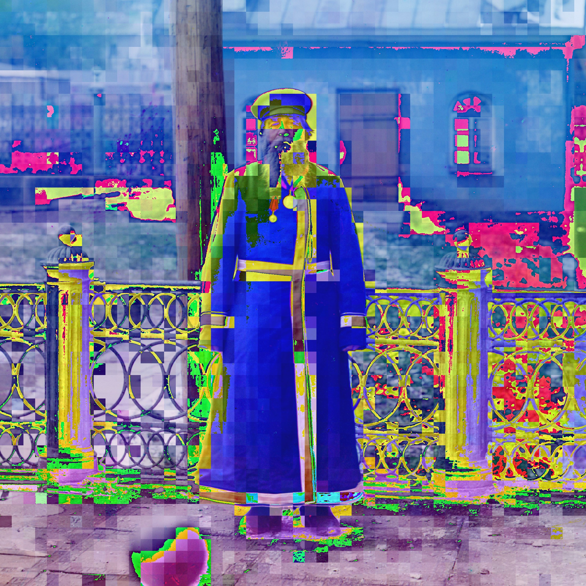
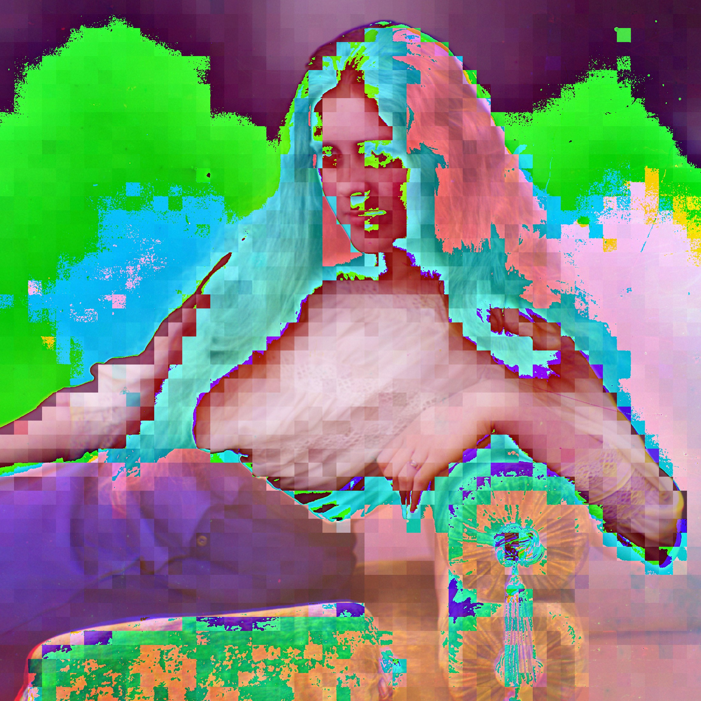
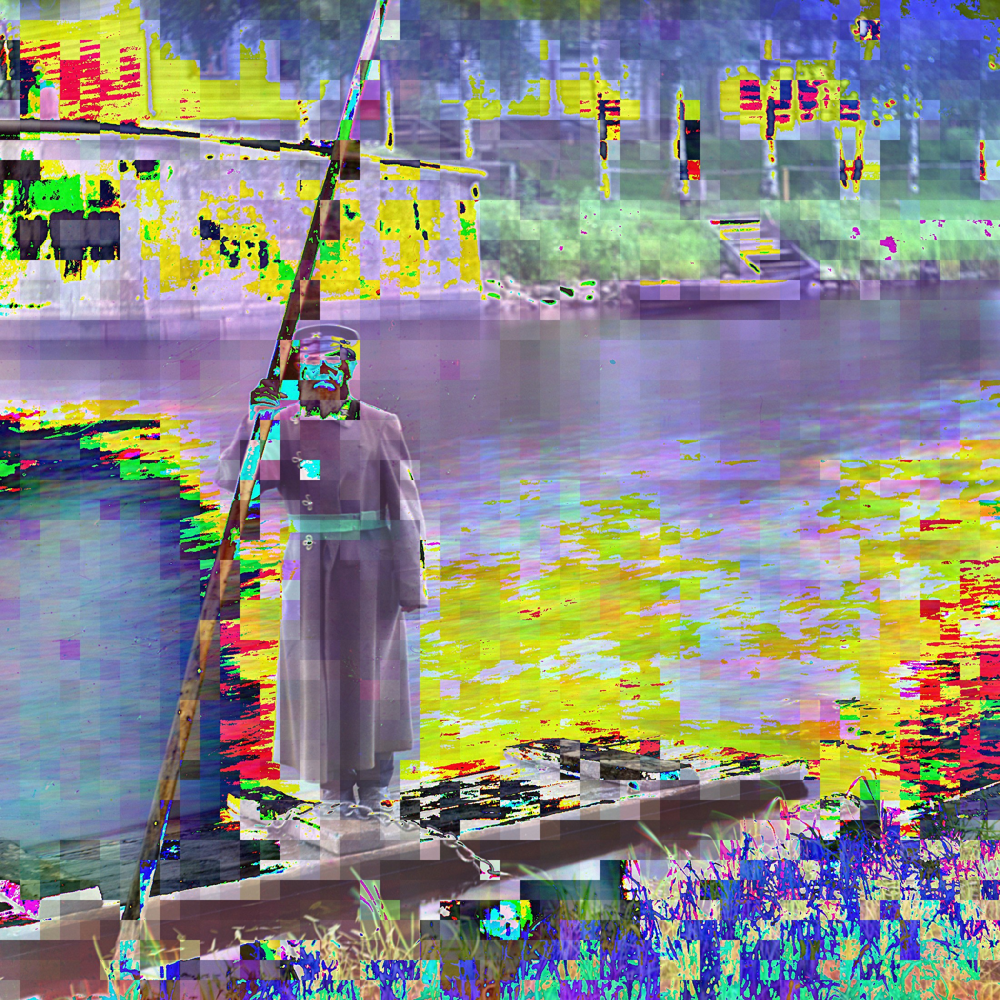
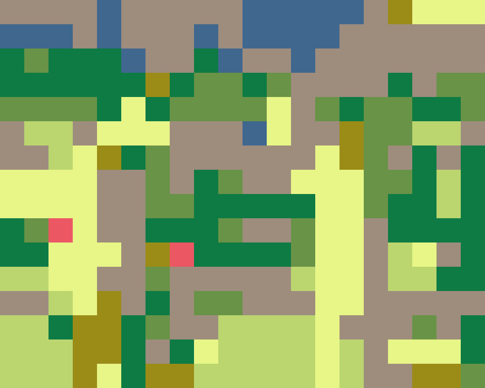
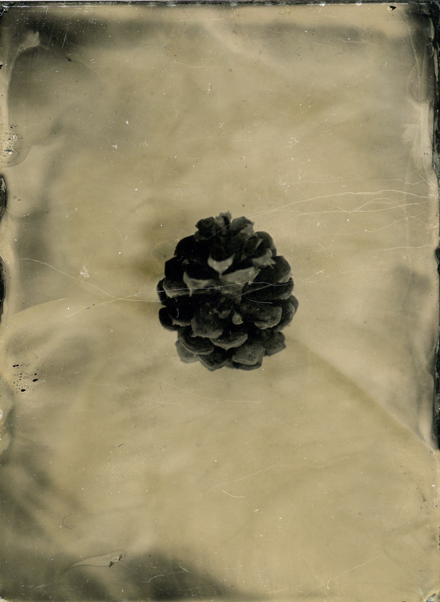
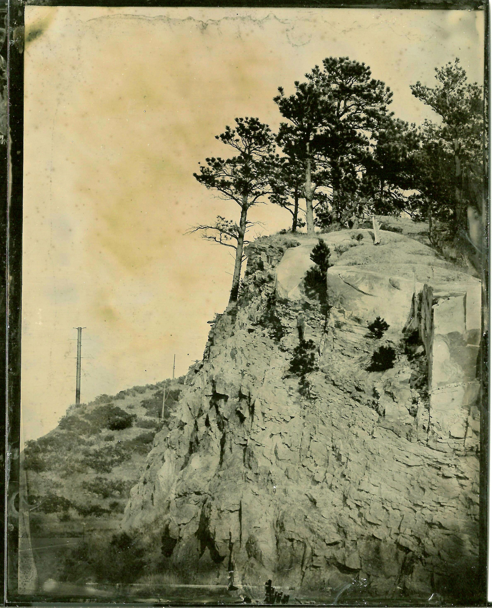
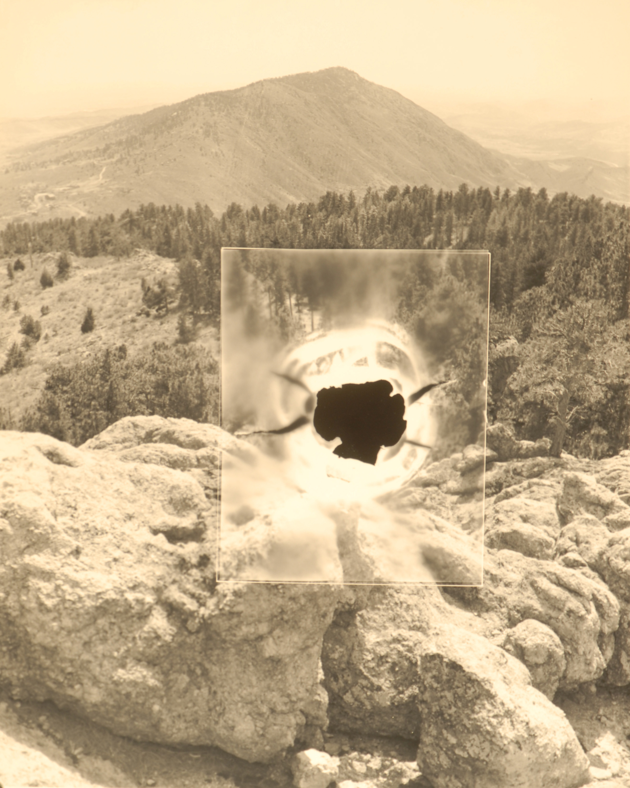

homepage - to navigate, click on a planet or a link to the left
This body of work is a visual conversation between two photographic,
lens-based technologies: large format chemical photography and satellite photography
applied to 3D models of buildings generated by Google Earth. Both are examples of
scientific instruments that are used in an attempt to objectively describe reality
through visual means, but the technology used - and therefore the media - still
imposes itself on these so-called "objective" depictions of reality. Desaturation
is replaced by low-resolution imaging and peculiar 3D modeling.
All locations depicted were photographed on 4x5 large format film using a Toyo
Field 45C camera, and screenshotted via the Google Earth interface. All
locations are in Fort Collins, CO.
Alan Perry, Alley Cat Cafe, 2016. Silver gelatin and inkjet print diptych. 20x48 inches. Edition of one.
Alan Perry, Prospect Plaza, 2016. Silver gelatin and inkjet print diptych. 20x48 inches. Edition of one.

Alan Perry, Durward Hall, 2016. Silver gelatin and inkjet print diptych. 20x48 inches. Edition of one.
Alan Perry, Old Town Fort Collins, 2016. Silver gelatin and inkjet print diptych. 20x48 inches. Edition of one.

Alan Perry, Park Lane Towers, 2016. Silver gelatin and inkjet print diptych. 20x48 inches. Edition of one.
This is a body of work derived from the images tagged as being portraits by the Library of Congress in their digital collection of images taken by Sergei Prokudin-Gorsky.
Alan Perry, After Prokudin-Gorsky 1, 2016. Joint Photographic Experts Group image. Variable dimensions, 1:1 aspect ratio.

Alan Perry, After Prokudin-Gorsky 2, 2016. Joint Photographic Experts Group image. Variable dimensions, 1:1 aspect ratio.
Alan Perry, After Prokudin-Gorsky 3, 2016. Joint Photographic Experts Group image. Variable dimensions, 1:1 aspect ratio.
Alan Perry, After Prokudin-Gorsky 4, 2016. Joint Photographic Experts Group image. Variable dimensions, 1:1 aspect ratio.
====STATEMENT GOES HERE====

Alan Perry, 24_vm_alyssa.jpg, 2015. Joint Photographic Experts Group image. Variable dimensions, 4:5 aspect ratio.

Alan Perry, MemoryCycle.gif, 2015. Graphics Interchange Format image. Variable dimensions, 4:5 aspect ratio.
Alan Perry, 3_vm_plane.jpg, 2015. Joint Photographic Experts Group image. Variable dimensions, 4:5 aspect ratio.
Alan Perry, 4_vm_plane.jpg, 2015. Joint Photographic Experts Group image. Variable dimensions, 4:5 aspect ratio.
Alan Perry, 5_vm_babies.jpg, 2015. Joint Photographic Experts Group image. Variable dimensions, 4:5 aspect ratio.
Alan Perry, 7_vm_plane.jpg, 2015. Joint Photographic Experts Group image. Variable dimensions, 4:5 aspect ratio.
Alan Perry, MemoryFalls.gif, 2015. Graphics Interchange Format image. Variable dimensions, 4:5 aspect ratio.
Collodion Work is a series of photographs made using the 19th
Century Wet Plate Collodion process. This process was the first "instant" imaging system,
and was very popular during the later half of the Century up until the inventions of the Kodak Brownie camera
and roll film in the early 20th Century. After these technologies became widespread,
the process fell into obscurity until the 21st Century where it is currently experiencing a revival.
These images document the landscape and objects in Northern Colorado, intentionally keeping
the actual decade of their production hidden until close observation reveals signs of the modern era.
Due to the process, each image is wholly unique and cannot be reproduced by traditional means. All artwork is in an edition of one.

Alan Perry, County Road 10, 2014. Wet Plate Collodion process photograph on tin. 4x5 inches.
Alan Perry, Pinecone, 2013. Wet Plate Collodion process photograph on tin. 3x4 inches.
Alan Perry, Ridge and Powerline, 2014. Wet Plate Collodion process photograph on tin. 4x5 inches.

Alan Perry, Panorama of Mulberry Street, 2013. Wet Plate Collodion process photograph on tin. 4x15 inches.
Alan Perry, Panorama of Poudre River, 2013. Wet Plate Collodion process photograph on tin. 4x12 inches.
Methods of Manifestation is a 10-image experimental series using silver gelatin photography. Burn marks were made directly on the film and translucent paper sandwiched between glass and photographic paper during printing. The marks made allude to forest fires and irreversible destruction, but also the emergence of new life that comes afterwards. All photographs were toned with selenium and coffee after printing, and were printed in an edition of one.
Alan Perry, Horsetooth Rock, 2012. Toned silver gelatin print. 8x10 inches.
Alan Perry, Milner Mountain, 2012. Toned silver gelatin print. 20x24 inches.
Alan Perry, Poudre River V, 2012. Toned silver gelatin print. 8x10 inches.
Remaining 7 images in series available by request.